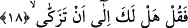
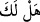
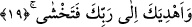

oluyorsa, azgınlığın kemali de hakka ve halka kötü muamele ile olmaktadır.
Kâşânî şöyle der: “Çünkü o çok azdı”: Yani enâniyetiyle ortaya çıktı. Şöylesine ki;
Fir’avn güçlü bir ruh sâhibi, bilge, âlim bir kişi idi. Fiiller vâdîsine girmiş, sıfatlar
vâdîsinde yol almıştı. Ancak enâniyeti sebebiyle mahrum kaldı. Bunun üzerine rablık
sıfatlarına büründü ve rablık sıfatlarını kendine âidmiş gibi gösterdi. İşte bunları
firavunluğundan, ceberutluğundan ve azgınlığından yaptı. Böylece Peygamber
Efendimiz’in, “İnsanların en kötüsü kendisi diri iken kıyametin başına kopmuş
olduğu kimsedir.” [4] hükmüne dâhil oldu. Böyle bir kimse, sıfatların tevhîdi
makamında nefsi ve onun heva ve hevesi ile kaim ve hayy’dir. İşte bu, mahrûmiyetlerin
en güçlüsüdür.
18. De ki: “Arınmayı ister misin?
Ona gittikten sonra “de ki; arınmayı ister misin?” Yani senin böyle bir isteğin ve
yönelimin var mı? Bir başka ifâdeyle; senin inkâr ve azgınlık kirlerinden, beşeri
bulanıklık kirleriyle ve tabiat pisliklerinden temizlenme arzun var mı?
“__WORD__/Hel leke” tâbirinin “seni ve çağırıyorum” anlamında mecâzî bir ifâde olduğu
söylenmiştir. Bu takdirde kelimenin mecâzî anlamda kullanılmış olduğuna karine;
kurbiyyet yâni yakınlıktır.
19. Ve seni Rabbimin yoluna iletmemi ister misin? Böylece ondan korkarsın.”
Sana Rabbinin mârifetine giden yolu göstereyim mi? Böylece O’nu tanır olur ve
O’ndan korkarsın, demektir. Bu tefsir tarzıyla âyette muzafın mahzuf olduğuna işâret
olunmaktadır. Dikkat edilirse bu âyette önce tezkiye teklif olunuyor. Çünkü,
tehalliden/güzel huylarla bezenmeden önce gelir” kuralından dolayıdır. “Böylece ondan
korkarsın.” Çünkü haşyet/korku, Allah Teâlâ’yı tanıdıktan sonra gerçekleşecek bir
meseledir. Nitekim Allah bu gerçeğe bir âyet-i kerimede şöyle işâret buyurmaktadır:
“Kulları içinde ancak âlimler (Allah’ı hakkıyla bilen âlimler) Allah’tan
(gereğince) korkar.” (Fâtır 35/28)
Anlatıldığına göre; Allah Teâlâ, Hz. Mûsâ’ya vermiş olduğu emrin sonunda “Fir’avn
bunu asla yapmayacak” dedi. Bunun üzerine Hz. Mûsâ Allah’a: “Ya Rabbi! Fir’avn’un
bunu asla yapmayacağını bildiğine göre benim kalkıp ona gidecek olmamın hikmeti
nedir?” diye sordu. Allah Teâlâ, Hz. Mûsâ’ya “sana emredileni yerine getirmek için